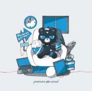

fax high school / 3rd Full Album [イトシキミヘ] 2017.12.20 ON SALE!

今作のテーマは”君と僕”。”君”とは大切な人、”僕”とは過去の自分自身。
両者へ向けられたメッセージが詰まっており、叙情的な世界観が伝わってくる作品だ。
また、前2作のミニアルバムでチャレンジしてきたアグレッシブなバンドサウンドを残しながらも、ヨシダタクミ(vo.)の本質と言える"歌"によりフォーカスすることで、過去最高にドラマチックな一枚となっている。
<収録曲>
1.「世界線YOUTH」
2.「過去現在未来進行形」
3.「イトシキミヘ」
4.「440Hz」
5.「エスニックガール」
6.「レイジーシンドローム」
7.「未完成フューチャー」
8.「kakemeguru」
9.「幻影少女」
10.「クリスマスタウン」
11.「sleep in good bye」
12.「アノニマス」
DLCR-17122 / 定価:¥2,750(税込)
タワーレコードにて 3rd Full Album [イトシキミヘ]発売記念ミニライブ＆サイン会決定いたしました！！
タワーレコード対象店舗にて、12/20(水)3rd Full Album「イトシキミヘ」をお買い上げ頂いた方に、先着でイベント参加券を差し上げます。
イベント参加券をお持ちの方のみ、ミニライブ終了後のサイン会にご参加頂けます。
※詳細はタワーレコード各店舗まで
・1/7(日) 新宿店 18:00～
・1/13(土) 名古屋パルコ店 12:00～
(対象店舗：名古屋パルコ店、名古屋近鉄パッセ店)
・1/13(土) 梅田NU茶屋町店 19:00～
(対象店舗：梅田NU茶屋町店、大阪マルビル店、難波店、あべのHoop店)
・1/26(金) 広島店 19:00～
・1/28(日) 福岡パルコ店 12:00～
・1/3(土) 上田店 15:00～
・2/24(土) 津田沼店 15:00～
(対象店舗：津田沼店、ららぽーとTOKYO-BAY店、TOWERmini西武船橋店、セブンパーク アリオ柏店)
・2/25(日) 仙台パルコ店 15:00～